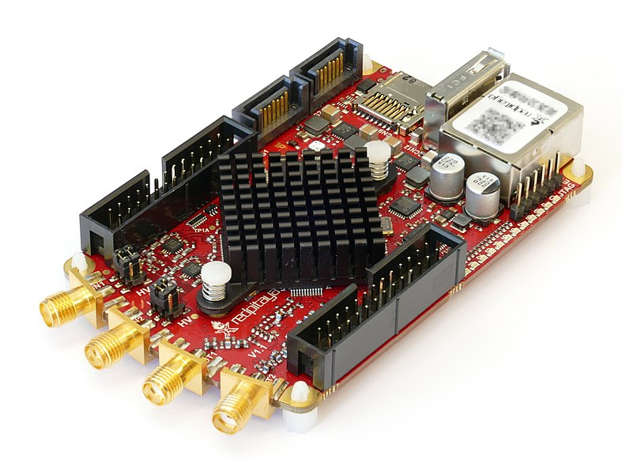
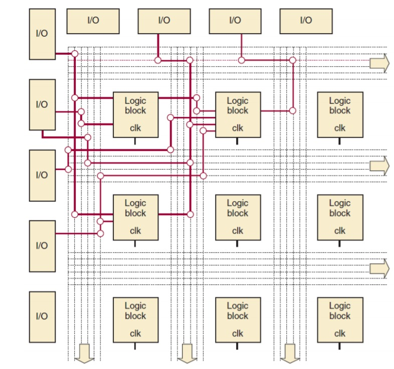
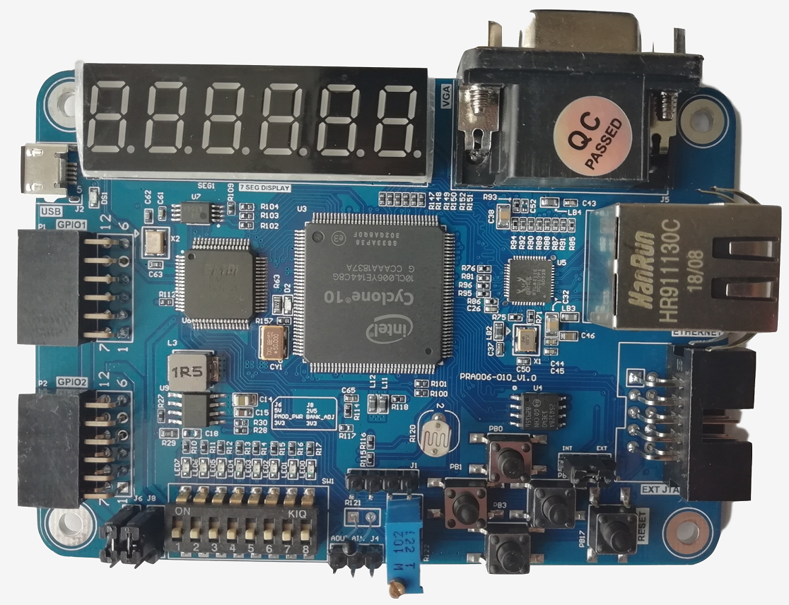
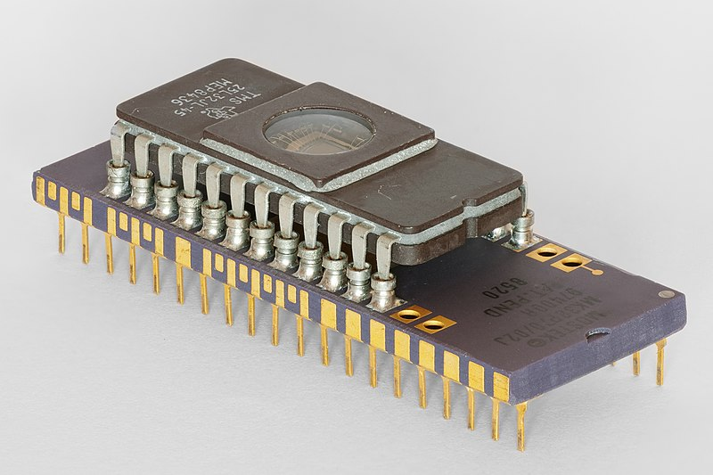
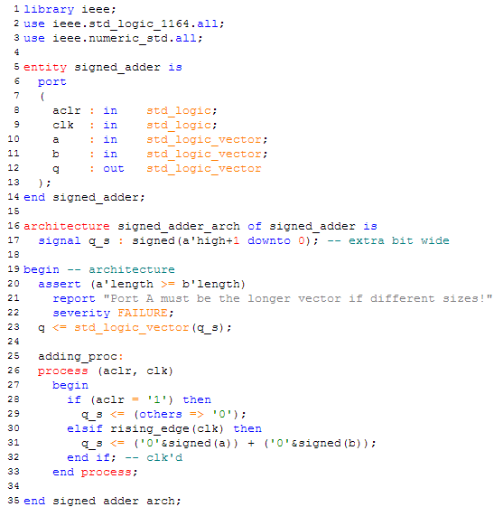

FPGA
FPGAs haben heute in Hinblick auf Flexibilität und Leistung eine wichtige Rolle in Entwicklungsprozessen. Und warum dies zutrifft werdet ihr hier auf dieser Webseite erfahren.
RedPitaya STEMLab FPGA
Quelle: Wikimedia Commons
Hier erwarten euch nach jedem Themenblock Selbstkontrollen in Form von Quizze, die beliebig oft bearbeitet werden können.
Nach Durchlesen und Bearbeiten soll euch
- der Aufbau und die einzelnen Teilelemente
- und Nutzen von FPGAs in verschiedensten Applikationen
bewusst sein.
Diese Seite dient euch zu helfen sich besser mit FPGAs vertraut zu machen und das in der Vorlesung Angesprochene besser zu verstehen, daher ist es von Vorteil sich mit Logikgatter, Array-Logikbausteine wie PLAs, PALs, PROMs usw. in den vorherigen Kapiteln beschäftigt zu haben.
Inhaltsverzeichnis
WAS IST EIN FPGA?
Die Abkürzung FPGA steht für „Field Programmable Gate Array“ (deutsch: „programmierbare Logikgatter-Anordnung“). Bei FPGAs handelt es sich somit um eine Anordnung von Logikgattern, die rekonfigurierbar sind.
Im Allgemeinen sind sie ein integrierter Schaltkreis der Digitaltechnik, in welche eine logische Schaltung geladen werden kann.
FPGAs haben für Entwicklern insbesondere im Hinblick auf die hohe Rechenleistung und die Flexibilität beim Design eine Menge zu bieten.
Dabei ist nicht nur ein hohes Maß an Rechenleistung gefordert, sondern auch ein deterministisches Verhalten in Echtzeit.
WIE SIND FPGAS AUFGEBAUT?
Ein FPGA besteht aus mehreren verschiedenen Komponenten wobei die konfigurierbaren Logikblöcke logische Funktionen implementieren. Zusammen mit den Ein- und Ausgangsblöcken und einer konfigurierbaren Verbindungsstrukturen bilden sie die allgemeine Struktur eines jeden FPGAs.
Quelle: Tocci, Widmer, Moss 2010, Abb. 13-2
Die Schaltungen werden in Form von „Look Up Tables“ (abgekürzt LUTs) vereinfacht, womit beliebige Logikkombinationen implementiert werten. Integriert mit Multiplexer, Addierer, Clock-Eingänge, Speicherelemente(Flip-Flops) oder zusätzliche Register bilden zusammen ein Logikblock (LB).
Hier eine vereinfachte Darstellung von dem Aufbau eines Logikblockes.
LUTs bzw. Umsetzungstabellen sind Wahrheitstabellen, die vorberechnete Ergebnisse statisch definieren.
| A | B | Y |
|---|---|---|
| 0 | 0 | 0 |
| 0 | 1 | 1 |
| 1 | 0 | 1 |
| 1 | 1 | 0 |
| A | B | Y |
|---|---|---|
| 0 | 0 | 1 |
| 0 | 1 | 1 |
| 1 | 0 | 1 |
| 1 | 1 | 0 |
Logiktabellen für XOR und NOR
Ein FPGA kann ca. 500 bis 500000 LBs beinhalten, die je nach Wahl und erwünsche Funktion beliebig untereinander durch die In-und Outputs einzelner LBs verschaltet werden, diese können entweder dauerhaft oder reversible sein. Somit sind multiple verschiedene Schaltungen realisierbar.

Quelle: Tocci, Widmer, Moss 2010, Abb. 13-2

WIE GENAU FUNKTIONIEREN FPGAS?
An sich hat ein neues, unkonfiguriertes FPGA keine Funktion, diese muss zuerst durch den Anwender entworfen werden.
Es gibt zwei verschiedene Arten von FPGAs, reversible und irreversible, wie der Name schon sagt, handelt es sich beim Erstere um eine immer wieder neu charakterisierbare Schaltung welche in eine Speicherzelle geladen wird.
Letztere verwendet Antifuses wodurch die Verbindungen unter die LBs auf Dauer festgelegt werden. Vorteil davon ist das Ausfallen der Wartezeit, um die benötigten Daten von der Speicherzelle bei jedem Neustart zu laden.
Um diese Schaltungen zu konstruieren, wird hier eine Hardwarebeschreibungssprache verwendet, die die Bausteine und einzelne Bestandteile des FPGAs logisch miteinander verbindet. Dies erfolgt entweder graphisch oder per Editor.
Wie bekannte Softwareprogrammiersprachen (Java, C) muss auch ein FPGA durch Tests oder Simulationen gedebuggt werden.
WIE WERDEN FPGAS IN DER REALITÄT UMGESETZT?
Ein FPGA kommt meist zusammen mit einem Development Board, welches schon die wichtigsten Features und Bauelemente beinhaltet. Beliebte Features für ein Beginners FPGA-Boards sind z.B. USB Interface, Segment LED Display, Speicherzellen, Push Buttons.
Weitere Beispiele mit Funktionen können hier gefunden werden: fraserinnovations.com
PRA006/010 Development Board
Quelle: https://fraserinnovations.com/fpga-for-beginners/fpga-board-for-beginner-fii-pra006-010-hardware-reference-guide/#post-764-_Toc14450819
Die Neukonfiguration der Verbindungen zwischen den LBs muss jedes Mal vor Benutzung des FPGAs wieder geladen werden, was meist einige Sekunden dauert. Diese Konfigurationsinformationen werden in Speicherzellen (EPROM, EEPROM, SRAM) außerhalb der mehrmals programmierbaren FPGA gespeichert, was die konkrete Funktion dieser beschreibt. Die Verbindungen bleiben so lange aktiv bis das FPGA abgeschaltet ist.
8-bit Microcomputer with EPROM (piggyback)
Quelle: Wikimedia Commons
Um die Verbindungsstrukturen zu beschreiben werden bestimmte Hardwarebeschreibungsspachen HDLs (Hardware Description Language) wie z.B. Verilog oder VHDL verwendet. Oft genutzte Strukturen und Codes werden von Herstellen für die Benutzer zur Verfügung gestellt, welche einfach eingebaut werden können. Auch werden immer häufiger Tools bereitgestellt die in einer höheren Programmiersprache wie C oder C++ programmiert wurden, was einen Einstieg für Entwicklern erleichtert.
VHDL source code for a signed adder
Quelle: Wikimedia Commons
Eine Website die einige Beispiele in VHDL anbietet ist mikrocontroller.net.
ANWENDUNGSGEBIETE
Während FPGAs früher hauptsächlich als so genannte "Glue-Logic" (auch: Verbindungslogik, zur Verbindung von zwei logischen Schaltungen) dienten, finden sie heute in vielen weiteren Gebieten Verwendung. Sei es in Echtzeit Verarbeitungen (von einfachen bis zu komplexen Algorithmen) oder Digitalen Filtern. Selbst zur Ausführung von schnellen Fourier Transformationen werden sie herangezogen. FPGAs werden auch in Parallelcomputern verbaut wobei auch sogenannte FPGA-Rechner existieren die zur Berechnung von Kryptografischer Verfahren dienen.
Im Ganzen finden sie vor allem also Gebrauch in den Bereichen der Digitaltechnik und dort, wo es vor allem auf schnelle Signalverarbeitung und flexible Änderung der Schaltungen ankommt.